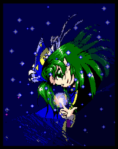
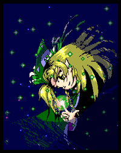

- Welcome to Touhou Wiki!
- Please register to edit. For assistance, check in with our Discord server or IRC channel.
Mima
Mima mʲima | |
|---|---|
 Mima in Mystic Square Evil SpiritMore Character Titles | |
| Species |
Vengeful spirit (Akuryou) |
| Abilities |
Magic |
| Age |
Lived for "a very long time" |
| Location | |
Music Themes | |
| |
Appearances | |
| Official Games | |
| |
| Print Works | |
| |
| Music CDs | |
| |
Mima (魅魔) is a vengeful spirit that haunts the area around the Hakurei Shrine in the PC-98 canon. Though she is called an evil spirit, she is not the same variety as the ones that appear in Subterranean Animism and Wild and Horned Hermit. She is, in reality, extremely strong, and she is very confident in her combat and magical abilities. Originally, she is sealed in the hokora attached to the shrine, but she manages to repeatedly break free of the seal.
General Information[edit]
Mima first appeared in the Hell route of the first Touhou Project game Highly Responsive to Prayers as a Stage 2 boss. She then later appeared as the final boss of Story of Eastern Wonderland. She then appeared as a playable character in both Phantasmagoria of Dim.Dream and Mystic Square. Although originally a very prominent character in the Touhou Project (one of the earliest characters appearing in almost every pre-Windows game from the very beginning), like many PC-98 characters, Mima has almost entirely disappeared from the series from Embodiment of Scarlet Devil onwards.
Although she is often called a ghost, Mima denies being dead and tries to explain herself as being "just a soul". In her profiles, she is described as being a "deity-like existence" of the shrine. Though in her Mystic Square good ending, she acknowledges that she is a ghost when alone. Being in spirit form, Mima's magic is most powerful during the night. She claims to want revenge against the entire human race, but it's not known what her motivations for that are. By the present day, most of the evil in her evil spirit has faded off.
Apparently, she is quite knowledgeable about the past of the Hakurei Shrine, even down to knowing exactly what the function of the Yin-Yang Orbs' true power is. Presumably, there is a reason and a story for this, but she's so old that she's forgotten what it was.
Background Information[edit]
Name[edit]
Her only known name is Mima (魅魔), which means "charming demon". It's likely to have come from "deceiving spirit" (魔魅 mami), where the kanjis were flipped.
Design[edit]
Mima's design changes differently throughout the series. The sprite of Mima in Highly Responsive to Prayers shows that she has dark eyes, long green hair and a white cap. She wears a long white and blue dress with red and green markings around its edges. She also has a medium-length blue cape with tattered edges, fastened at her neck with a red ribbon. As an evil spirit, she has a light-blue tail rather than legs. Furthermore, she holds a bloody knife in her left hand.
Later in Story of Eastern Wonderland, Mima's design changes in three forms. As her first form, her portrait shows that she has green eyes, long green hair, a purple ribbon on her neck and a white cap once again. Her sprite with the same form in her cameo of Stage 5 and at the beginning of the Final Stage shows that she wears a purple dress under a long blue cape and has once again a white tail. The sprite in her second form is same as her first form, except it shows that she wears a blue cap, a blue, light-blue, and green dress with white symbols on it under a long purple cape. She is also shown to have large blue and purple wings and wields a long staff topped with a white crescent. The sprite in her final form in her final attack is same as her second form, except she now has six purple wings. Although her appearance changes in her sprites, her portrait stays the same.
Later in Phantasmagoria of Dim.Dream, Mima's design is just as same as Story of Eastern Wonderland's, except now she has a sun on her blue cap and a long blue cape with a yellow trim and markings over her blue vest and dress. The border of her dress is green. She also has a heavy chain hanging over the left-side of her vest. Furthermore, she once again has a dark-blue tail and it's revealed that she has pointy ears.
Again, later in Mystic Square, Mima's design is just as same as Phantasmagoria of Dim.Dream's, but her cape now has white trim and markings and is fastened at her neck with a yellow ribbon. Her blue vest has white sleeves and buttons and there is no longer a chain beneath her cape over her chest. Strangely, she appears to have developed legs and now wears white shoes.
Her alternative outfit in Phantasmagoria of Dim.Dream is same as her normal outfit, except her cape, vest, dress and tail is now green, and that she has blond hair. The border of her dress and her eyes are yellow.
Mima's Appearances[edit]
PC-98[edit]
- Highly Responsive to Prayers
In Highly Responsive to Prayers, she appears in the midst of a hokora, which is a tiny shrine usually attached to a larger shrine, dedicated to the worship of folk spirits, and battles the player. Afterwards, she's sealed back into the hokora by Reimu Hakurei.
- Story of Eastern Wonderland
- Main article: Story of Eastern Wonderland Story
She breaks loose of this seal in the events of Story of Eastern Wonderland, and appears in the final two stages along with Marisa Kirisame, who appears to be her apprentice of sorts. Reimu accuses Mima of wrecking her shrine, but Mima responds that she was more interested in vengeance against the entire human race. Mima eventually challenges Reimu so she can take the yin yang orbs and their power for herself. After she suffers another defeat by Reimu's hand, she is once again sealed away, only to break free a month later.
- Phantasmagoria of Dim.Dream
- Main article: Phantasmagoria of Dim.Dream Story Mima Arc
She is one of the playable characters in Phantasmagoria of Dim.Dream. After defeating Yumemi, her wish is for the moon to stay up forever, as her power is strongest when the moon is out. Yumemi grants her wish by placing the moon in geosynchronous orbit, causing it to always be night. Afterwards, Mima cheerfully used her now-eternal increased power to go tease Reimu some more. Things were eventually restored back to the normal day night circle, but how is a story for another time.
- Mystic Square
- Main article: Mystic Square Story Mima Arc
She is one of the playable characters in Mystic Square, deciding to travel to Makai for her own reasons (that being that the demons were intruding on her turf since the human world was hers). Mima cheerfully trolls her way through the various inhabitants of Makai (including Alice Margatroid) and eventually meets Shinki. After Shinki introduces herself as the god of Makai, Mima gets an idea to lie that she herself is the god of the human world. She ends up fighting Shinki to stop the demons from going to the human world. After her victory, Shinki asks Mima to leave and questions if Mima is just one of the many eight million gods. Mima returns to the Hakurei shrine, thinking on the matter and considers becoming a god, herself, but in the end decides to just tease Reimu some more, even as demons continue to infest the Hakurei Shrine. Later, Mima eventually encounters Alice again, who challenges Mima to a rematch. Aferwards, Mima forces Alice to be her maid. As Alice serves her, Mima decides that maybe she'll become a god, after all.
Post-PC-98[edit]
Mima has made a number of other references within the Windows canon. After many years of absence, Mima once again appeared on the cover of Akyu's Untouched Score vol.4, but she appeared to have a star on her cap. She was possibly made reference in Curiosities of Lotus Asia Chapter 25, when Reimu Hakurei comments that the Hakurei Shrine was once taken over by an evil spirit for its god (something that Mima, an evil spirit, did). The fact that Mima isn't mentioned by name however, might mean it wasn't Mima.
Her music theme "Reincarnation" has been arranged a number of times after the PC-98, with one arrangment coming from Dolls in Pseudo Paradise. She might've been made reference in the comments of said album. Furthermore, Mima's "Orreries Sun" attack is one of the super moves that Marisa Kirisame can perform in Immaterial and Missing Power and Scarlet Weather Rhapsody as Mima is believed to have been Marisa's mentor of some sort.
Relationships[edit]
Marisa Kirisame[edit]
Within the PC-98, Marisa Kirisame was subservient to Mima and she tells Marisa to "train harder" in Phantasmagoria of Dim.Dream and Marisa saying "I beat Lady Mima". Currently, she's the sole character whom Marisa calls by a title of honour. Marisa admires Mima greatly, boasting that she can make a strategy guide in Story of Eastern Wonderland's omake because "there's no way Mima-sama can be beaten", and apologising to Mima when defeated by Reimu Hakurei.
Moreover, in Story of Eastern Wonderland, there was also a bit where Marisa manipulated star magic and sent forth something like "Orreries Sun", and afterwards Mima also used star magic and Orreries. In the Windows canon, Marisa also has Orreries Sun as a spell card in Immaterial and Missing Power.
However, in the original work, there wasn't even a single scene when Marisa and Mima ever had a mutual conversation together, and the unique talk is only in Phantasmagoria of Dim. Dream's winning expressions. In Mima's character settings, there's not a single statement related to Marisa, and in Marisa's character settings, there's nothing except for Phantasmagoria of Dim. Dream where it said that she "longs for Mima and calls her 'Mima-sama.'" Additionally, ZUN himself refuses to answer any questions that's associated with this relationship.[1]
Reimu Hakurei[edit]
Mima haunts the surroundings of the Hakurei Shrine, after many confrontations and being resealed by Reimu Hakurei, she decides to spend her days making fun of the Shrine Maiden.
Alice Margatroid[edit]
At the end of Mystic Square, Mima takes Alice as her maid, releasing her some time later.
Additional Information[edit]
- Mima appears on the covers of Story of Eastern Wonderland and Phantasmagoria of Dim.Dream, the latter among the rest of the playable characters.
- Excluding any spin-offs, Mima is the only Final boss that takes up the smallest amount of stages to get to her, there only being 5, while normally an average Touhou Project game has 6 stages.
- She's the only PC-98 character to have appeared on an official CD cover, but has yet to appear in any Windows game.
- The bloody knife she carries in her original appearance may be a hint at her past, how she became a ghost, or why she became an "evil spirit". It can be easily speculated that Mima either was killed by or committed suicide with the knife she carries.
- In Highly Responsive to Prayers, she appears to have more than two arms. When she moves to shoot bullets, her left arm stays in place and a third arm appears. This is most likely a sprite error as her third arm shows to also be holding the bloody knife.
- One of her attacks used in Story of Eastern Wonderland (namely, Orreries Sun), slightly resembles the same attacks used by the boss Bloody Mary from the RPG Terranigma. This is most likely a coincidence, however.
- Mima is the only known humanoid evil spirit.
Fandom[edit]
Official Profiles[edit]
|  | ★ 久遠の夢に運命を任せる精神 ・・・ 魅魔
博麗神社にうらみをもつ悪霊。だったが、長い間悪霊をしているうちに邪気もすっかり抜け、いまでは、靈夢をからかうのが日課となっている。 すでに、博麗神社の神（祟り神）的存在となっているが、その性格は、人間より人間的である。
|
Spirit who leaves fate to the dream of eternity - Mima
An evil spirit that resents the Hakurei Shrine, or used to. As she's been an evil spirit for quite a long time, her evilness has completely fallen off from her. Now she enjoys her days making fun of Reimu. She is like the deity (evil deity) of the Shrine by now, but her personality is more human-ish than human. As strange things are happening again, she is looking forward to more upcoming events. |
|
|
魅魔（みま） ・・ 悪霊さん
すでに、博麗神社の神（祟り神）的存在となっているが、その性格は、人間より人間的である。 |
Mima - An Evil Spirit
An evil spirit that has been living (?) for very long time. As she can't remember things for such a long time, she appears to be enjoying her current days. She is like the deity (evil deity) of the Shrine by now, but her personality is more human-ish than human. |
Official Sources[edit]
- 1997/08/15 Highly Responsive to Prayers
- 1997/08/15 Story of Eastern Wonderland - Stage 4 and Stage 5 dialogue
- 1997/12/29 Phantasmagoria of Dim.Dream - included files (official profile)
- 1998/12/30 Mystic Square - included files (official profile)
- 2007/12/31 Akyu's Untouched Score vol.4 - CD cover
References[edit]
| This page is part of Project Characters, a Touhou Wiki project that aims to write proper descriptions for all official characters of Touhou Project. Please keep the character page guidelines in mind when contributing. |
- Highly Responsive to Prayers
- Story of Eastern Wonderland
- Phantasmagoria of Dim.Dream
- Mystic Square
- Characters
- Characters in Highly Responsive to Prayers
- Characters in Story of Eastern Wonderland
- Characters in Phantasmagoria of Dim.Dream
- Characters in Mystic Square
- Characters playable in Touhou
- Characters playable in a multiplayer Touhou
- PC-98 Characters